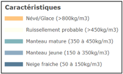

Contexte
La neige joue un rôle prépondérant dans l’hydrologie des bassins versants de montagne. Son suivi est indispensable au regard des forts enjeux que sont la sûreté des aménagements hydroélectriques ainsi que la valorisation qui en est faite lors de sa fonte printanière. DTG exploite depuis 80 ans maintenant un réseau de suivi de l’enneigement unique en France, pour répondre aux exigences d’EDF en termes de sûreté et d’optimisation des moyens de production. Les données produites sont à la fois valorisées en temps réel à travers la réalisation de prévisions saisonnières, mais également en temps différé au travers d’études hydrologiques grâce à l’importante profondeur temporelle disponible aujourd’hui. Ces chroniques patrimoniales apportent en effet parmi bien d’autres choses un éclairage remarquable sur les effets du changement climatique sur la dynamique nivale des bassins versants de montagne.
Pour aller plus loin
Si la donnée d’enneigement la plus populaire pour le grand public est sa hauteur, l’hydrologue est avant tout concerné par son équivalent en eau, le volume d’eau que la neige libèrera finalement en fondant. De plus, pour appréhender la dynamique temporelle des phénomènes hydrologiques dépendant de cet enneigement, il ne suffit pas de connaître l’équivalent en eau global à l’amont d’un aménagement : la répartition spatiale de la neige, la surface enneigée, le contenu en eau de la neige sont des paramètres qui conditionnent également l’évolution des débits à l’exutoire du bassin.
FAQ
Masse volumique de la neige
Une fois au sol, la neige contribue à la constitution du manteau neigeux, un feuilletage de couches superposées correspondant aux chutes de neige successives. Ensuite, sa structure et sa densité évoluent en fonction des conditions météorologiques.
La densité de la neige fraîche dépend à la fois du type de cristaux et de la température. Elle peut varier de 0,02 (soit une masse volumique de 20 kg/m3) pour une neige d’hiver très froide et très légère, à des valeurs proches de 0,3 (soit une masse volumique de 300 kg/m3) pour une neige de printemps très humide. Il convient ici de rappeler que, à la température de 0 0C et à pression atmosphérique normale (1 013 hectopascals), la glace ordinaire a une densité d’environ 0,9 et que la faible densité relative de la neige tient au fait qu’elle contient de grandes quantités d’air. La valeur moyenne qui est généralement associée à une couche de neige fraîche est de 0,1 (soit une masse volumique de 100 kg/m3), c’est-à-dire qu’un manteau neigeux de 10 centimètres de hauteur, une fois fondu, laissera la place à une couche d’eau liquide haute de seulement 1 centimètre.
Mais la densité évolue dans le temps, en fonction du vieillissement de la neige, de son humidité, de son tassement et du poids des couches supérieures. En principe, elle augmente avec la profondeur, et, dans les couches profondes, elle peut atteindre des valeurs supérieures à 0,6. Il existe toutefois des situations où certaines couches profondes sont moins denses que les couches adjacentes supérieures. Le manteau neigeux est alors instable, et les risques d’avalanche sont alors sérieux.
Comment saisir un sondage ?
Indiquez le poids net de la neige, la hauteur mesurée et cocher la case "fond" si le sondage a atteint le sol. Les calculs se font automatiquement.
Comment exporter et envoyer les données ?
Utilisez le bouton « Exporter CSV + mail » dans la section Sessions enregistrées.
L'application mail s'ouvre, joindre le csv enregistré dans le dossier téléchargement ainsi que les pièces jointes nécessaires.
Mode hors ligne ?
L’application fonctionne hors ligne grâce au cache du PWA. Les données sont stockées localement.
Des questions ?
Nhésitez pas à contacter vos interlocuteurs locaux directement par téléphone ou par mail : hydro-dtg-climato@edf.fr.